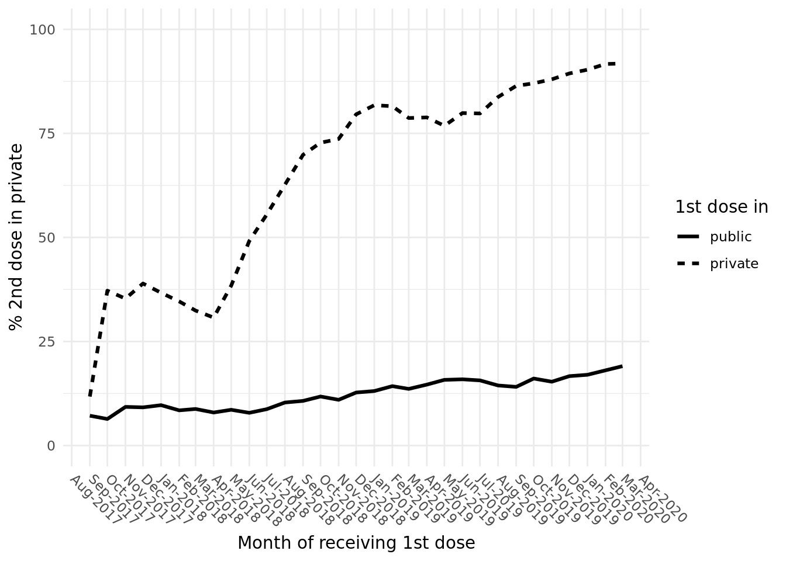

Last updated: 2022-04-22
Checks: 5 2
Knit directory: Vaccination_COVID/
This reproducible R Markdown analysis was created with workflowr (version 1.7.0). The Checks tab describes the reproducibility checks that were applied when the results were created. The Past versions tab lists the development history.
The R Markdown is untracked by Git. To know which version of the R Markdown file created these results, you’ll want to first commit it to the Git repo. If you’re still working on the analysis, you can ignore this warning. When you’re finished, you can run wflow_publish to commit the R Markdown file and build the HTML.
Great job! The global environment was empty. Objects defined in the global environment can affect the analysis in your R Markdown file in unknown ways. For reproduciblity it’s best to always run the code in an empty environment.
The command set.seed(20210126) was run prior to running the code in the R Markdown file. Setting a seed ensures that any results that rely on randomness, e.g. subsampling or permutations, are reproducible.
Great job! Recording the operating system, R version, and package versions is critical for reproducibility.
Nice! There were no cached chunks for this analysis, so you can be confident that you successfully produced the results during this run.
Using absolute paths to the files within your workflowr project makes it difficult for you and others to run your code on a different machine. Change the absolute path(s) below to the suggested relative path(s) to make your code more reproducible.
| absolute | relative |
|---|---|
| ~/Vaccination_COVID/data/publicProvinces.rds | data/publicProvinces.rds |
Great! You are using Git for version control. Tracking code development and connecting the code version to the results is critical for reproducibility.
The results in this page were generated with repository version c6c4459. See the Past versions tab to see a history of the changes made to the R Markdown and HTML files.
Note that you need to be careful to ensure that all relevant files for the analysis have been committed to Git prior to generating the results (you can use wflow_publish or wflow_git_commit). workflowr only checks the R Markdown file, but you know if there are other scripts or data files that it depends on. Below is the status of the Git repository when the results were generated:
Ignored files:
Ignored: .Rhistory
Ignored: .Rproj.user/
Untracked files:
Untracked: analysis/06_20220405_discussion.Rmd
Untracked: data/publicProvinces.rds
Note that any generated files, e.g. HTML, png, CSS, etc., are not included in this status report because it is ok for generated content to have uncommitted changes.
There are no past versions. Publish this analysis with wflow_publish() to start tracking its development.
knitr::opts_chunk$set(warning = FALSE, message = FALSE, cache.lazy = FALSE, tidy.opts=list(width.cutoff=60), tidy=TRUE, root.dir = rprojroot::find_rstudio_root_file())
library(data.table)
library(dplyr)
Attaching package: 'dplyr'The following objects are masked from 'package:data.table':
between, first, lastThe following objects are masked from 'package:stats':
filter, lagThe following objects are masked from 'package:base':
intersect, setdiff, setequal, unionlibrary(tidyr)
library(lubridate)
Attaching package: 'lubridate'The following objects are masked from 'package:data.table':
hour, isoweek, mday, minute, month, quarter, second, wday, week,
yday, yearThe following objects are masked from 'package:base':
date, intersect, setdiff, unionlibrary(ggplot2)
# Path to dataset
allp <- file.path("~", "updated_dataset")
# Load vector of public provinces names
publicProvinces <- readRDS("~/Vaccination_COVID/data/publicProvinces.rds")Load and process measles dataset
# Load measles data
load(file.path(allp, "measle_all.Rdata"))
# Get children and public provinces only
measle_all <- measle_all[measle_all$province %in% publicProvinces &
measle_all$year >= 2017 & measle_all$year <= 2020, ]
measle_all <- measle_all %>%
distinct(., pid, province, district, commune, sex, dob, vacname2,
vacdate, .keep_all = TRUE)
measle_all <- measle_all %>%
group_by(pid, vacname2) %>%
arrange(vacdate) %>%
mutate(shot = 1:n()) %>%
ungroup()
measle_all <- data.table(measle_all)
measle_all$age <- 2021 - measle_all$year
measle_all$sex <- ifelse(measle_all$sex == 2, 1, measle_all$sex)
measle_all$sex <- factor(measle_all$sex, levels = c(0, 1), labels = c("F",
"M"))
measle_all$shot2 <- ifelse(measle_all$shot >= 2, 2, measle_all$shot)
measle_all$start2 <- ifelse(measle_all$shot2 == 2, NA, measle_all$start)
measle_all$start2 <- ifelse(measle_all$vacname2 == "Measle_Mumps_Rubella" &
measle_all$shot2 == 1, 12, measle_all$start2)
measle_all$vdelay2 <- measle_all$vagem2 - measle_all$start2
measle_all <- measle_all[measle_all$shot == 1, ]
measle_all$expect_vdate <- measle_all$dob %m+% months(measle_all$start)Extract children who get 2 shots
measles_2shots <- measle_all[duplicated(measle_all$pid) | duplicated(measle_all$pid,
fromLast = T), ]
dup_sameday <- measles_2shots[duplicated(measles_2shots[, c("pid",
"vacdate")]) | duplicated(measles_2shots[, c("pid", "vacdate")],
fromLast = T), c("pid", "vacdate", "vacname2", "type2")]
head(dup_sameday, 10) pid vacdate vacname2 type2
1: 201033720170006 2017-10-10 Measle public
2: 201033720170006 2017-10-10 Measle_Rubella public
3: 213092120170006 2017-10-12 Measle public
4: 213092120170006 2017-10-12 Measle_Rubella public
5: 101430120170024 2017-10-27 Measle public
6: 101430120170024 2017-10-27 Measle_Mumps_Rubella private
7: 101012320170037 2017-11-01 Measle public
8: 101012320170037 2017-11-01 Measle_Mumps_Rubella private
9: 101012320170094 2017-11-23 Measle public
10: 101012320170094 2017-11-23 Measle_Mumps_Rubella privateSome received the same vaccine in the same day, filter them out and continue
# Remove children with multiple shots of measles in the
# same day
measles_2shots <- measles_2shots %>%
distinct(., pid, vacdate, .keep_all = T)
# Now subset the one still get 2 shots
measles_2shots <- measles_2shots[duplicated(measles_2shots$pid) |
duplicated(measles_2shots$pid, fromLast = T), ]
# Sort by vaccination date and numbering the shot
measles_2shots <- measles_2shots %>%
group_by(pid) %>%
arrange(vacdate) %>%
mutate(vtimes = 1:n(), vacdate_1st = first(vacdate)) %>%
ungroup()
# How many shots they receive
table(measles_2shots$vtimes)
1 2 3
1622531 1622531 85123 Some received 3 shots, filtered them out. Change dataset from long to wide format
# Remove those who get the 3rd shot
measles_2shots <- measles_2shots[measles_2shots$vtimes != 3,
]
measles_2shots <- measles_2shots[order(measles_2shots$pid), ]
# Prefix 'shot' to vtimes to make wide data frame easier
measles_2shots$vtimes <- paste0("shot", measles_2shots$vtimes)
df <- measles_2shots[, c("pid", "vacdate_1st", "vtimes", "type2")]
df <- df %>%
pivot_wider(., names_from = vtimes, values_from = type2)
head(df)# A tibble: 6 × 4
pid vacdate_1st shot1 shot2
<chr> <date> <fct> <fct>
1 101010120170003 2017-11-05 public public
2 101010120170006 2017-11-05 public private
3 101010120170007 2017-12-13 public private
4 101010120170008 2017-10-05 public public
5 101010120170014 2018-01-10 public public
6 101010120170015 2017-11-15 public public Aggregate them by month
df$vyear_1st <- year(df$vacdate_1st)
df$vmonth_1st <- month(df$vacdate_1st)
df_type <- aggregate(pid ~ vyear_1st + vmonth_1st + shot1 + shot2,
data = df, FUN = length)
df_type <- df_type %>%
group_by(vyear_1st, vmonth_1st, shot1) %>%
mutate(denom = sum(pid))
df_type$pct2 <- 100 * df_type$pid/df_type$denom
# Take 01/2018 as an example
df_type %>%
filter(vyear_1st == 2018 & vmonth_1st == 1) %>%
print()# A tibble: 4 × 7
# Groups: vyear_1st, vmonth_1st, shot1 [2]
vyear_1st vmonth_1st shot1 shot2 pid denom pct2
<dbl> <dbl> <fct> <fct> <int> <int> <dbl>
1 2018 1 private private 305 831 36.7
2 2018 1 public private 4804 49540 9.70
3 2018 1 private public 526 831 63.3
4 2018 1 public public 44736 49540 90.3 Line plot
# Get only row that 2nd shot is private
df_plot <- df_type[df_type$shot2 == "private", ]
# To plot on a date format x-axis
df_plot$vacdate_1st <- ym(paste0(df_plot$vyear_1st, "-", df_plot$vmonth_1st))
# Subset from 09/2017 to 03/2020
df_plot <- df_plot[df_plot$vacdate_1st >= "2017-09-01" & df_plot$vacdate_1st <=
"2020-03-01", ]
df_plot$shot1 <- factor(df_plot$shot1, levels = c("public", "private"))
ggplot(df_plot, aes(x = vacdate_1st, y = pct2, group = shot1)) +
geom_line(aes(linetype = shot1), stat = "identity", size = 1.1) +
scale_x_date(date_labels = "%b-%Y", date_breaks = "1 month") +
ylim(c(0, 100)) + theme_minimal() + labs(x = "Month of receiving 1st dose",
y = "% 2nd dose in private", linetype = "1st dose in") +
theme(axis.text.x = element_text(angle = -45, hjust = -0.1),
panel.grid.minor.x = element_blank())
sessionInfo()R version 4.0.5 (2021-03-31)
Platform: x86_64-pc-linux-gnu (64-bit)
Running under: Ubuntu 18.04.5 LTS
Matrix products: default
BLAS: /usr/lib/x86_64-linux-gnu/blas/libblas.so.3.7.1
LAPACK: /usr/lib/x86_64-linux-gnu/lapack/liblapack.so.3.7.1
locale:
[1] LC_CTYPE=C.UTF-8 LC_NUMERIC=C LC_TIME=C.UTF-8
[4] LC_COLLATE=C.UTF-8 LC_MONETARY=C.UTF-8 LC_MESSAGES=C.UTF-8
[7] LC_PAPER=C.UTF-8 LC_NAME=C LC_ADDRESS=C
[10] LC_TELEPHONE=C LC_MEASUREMENT=C.UTF-8 LC_IDENTIFICATION=C
attached base packages:
[1] stats graphics grDevices utils datasets methods base
other attached packages:
[1] ggplot2_3.3.5 lubridate_1.8.0 tidyr_1.2.0 dplyr_1.0.8
[5] data.table_1.14.2
loaded via a namespace (and not attached):
[1] Rcpp_1.0.8 formatR_1.11 pillar_1.7.0 compiler_4.0.5
[5] later_1.3.0 jquerylib_0.1.4 git2r_0.29.0 highr_0.9
[9] workflowr_1.7.0 tools_4.0.5 digest_0.6.29 gtable_0.3.0
[13] evaluate_0.15 lifecycle_1.0.1 tibble_3.1.6 pkgconfig_2.0.3
[17] rlang_1.0.1 DBI_1.1.2 cli_3.2.0 rstudioapi_0.13
[21] yaml_2.3.5 xfun_0.29 fastmap_1.1.0 withr_2.4.3
[25] stringr_1.4.0 knitr_1.37 generics_0.1.2 fs_1.5.2
[29] vctrs_0.3.8 grid_4.0.5 rprojroot_2.0.2 tidyselect_1.1.2
[33] glue_1.6.2 R6_2.5.1 fansi_1.0.2 rmarkdown_2.11
[37] farver_2.1.0 purrr_0.3.4 magrittr_2.0.2 scales_1.1.1
[41] promises_1.2.0.1 ellipsis_0.3.2 htmltools_0.5.2 assertthat_0.2.1
[45] colorspace_2.0-3 httpuv_1.6.5 labeling_0.4.2 utf8_1.2.2
[49] stringi_1.7.6 munsell_0.5.0 crayon_1.5.0